Worked problems
Type a number and press Check. Hints and a worked solution are there when you want them.
Level 0 · Distances, light and gravity
Unit conversions and first estimates: the tools every later calculation relies on.
The nearest star ★
The parallax of Proxima Centauri is 768.07 milliarcseconds. How far away is it in light-years?
light-years
Hint 1
A star with a parallax of 1 arcsecond is 1 parsec away; distance in parsecs = 1 / parallax in arcseconds.
Hint 2
Convert the parallax to arcseconds first (0.76807″), then use 1 pc = 3.2616 light-years.
Solution
- Parallax in arcseconds: .
- Distance: .
- In light-years: light-years.
Eight minutes in the past ★
How many minutes does light need to travel one astronomical unit, from the Sun to the Earth?
minutes
Hint 1
Time = distance / speed.
Hint 2
1 AU = 1.496 × 10¹¹ m and c = 2.998 × 10⁸ m/s. Divide, then convert seconds to minutes.
Solution
- .
- minutes: we always see the Sun as it was eight minutes ago.
A receding galaxy ★
The hydrogen Hα line, emitted at 656.28 nm, is observed in a galaxy at 721.93 nm. Using the low-speed approximation v ≈ cz, how fast is the galaxy receding, in km/s?
km/s
Hint 1
Redshift z = (observed − emitted) / emitted.
Hint 2
z = 0.1000, and c = 299 792 km/s.
Solution
- .
- .
At this speed the simple formula is already about 5% off; the relativistic Doppler formula and, for galaxies, the cosmological redshift of Level 2 do better.
Andromeda in megaparsecs ★
The Andromeda galaxy is 2.54 million light-years away. What is that in megaparsecs?
Mpc
Hint 1
1 parsec = 3.2616 light-years, and 1 Mpc = 10⁶ pc.
Hint 2
First convert to parsecs: 2.54 × 10⁶ / 3.2616.
Solution
- .
- . Cosmologists use megaparsecs because even the nearest big galaxy is below one.
Weighing the Milky Way ★★
The Sun orbits the centre of the Milky Way at 230 km/s at a distance of 8.2 kpc. Treating the orbit as circular, how much mass lies inside it, in solar masses?
M☉
Hint 1
For a circular orbit gravity supplies the centripetal force: GM/r² = v²/r.
Hint 2
M = v² r / G. Use SI units: v = 2.3 × 10⁵ m/s, 1 kpc = 3.086 × 10¹⁹ m, M☉ = 1.989 × 10³⁰ kg.
Solution
- .
- .
- .
- Dividing by the solar mass: .
A year in seconds ★
Estimate the number of seconds in a year without a calculator, then give the answer to three significant figures.
s
Hint 1
365 days × 24 hours × 60 minutes × 60 seconds.
Hint 2
Round as you go - 365 × 24 ≈ 8 800 hours, and there are 3 600 seconds in an hour.
Solution
. The handy approximation
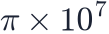
is accurate to half a percent.The age of the universe, in your head ★★
Using km/s/Mpc, estimate the Hubble time  in billions of years.
in billions of years.
Gyr
Hint 1
Convert H₀ to inverse seconds - 1 Mpc = 3.086 × 10¹⁹ km.
Hint 2
H₀ = 70 / 3.086×10¹⁹ s⁻¹ ≈ 2.27×10⁻¹⁸ s⁻¹; invert, then divide by 3.156×10⁷ s per year.
Solution
- .
- .
- Divide by s/yr: years, or about 14 billion. The true age, 13.8 Gyr, is close for reasons that took Level 3 to explain.
Level 1 · Measuring the universe
The distance ladder, the Hubble law and the first relic of the Big Bang.
Hubble's law ★
A galaxy lies 150 Mpc away. With H0 = 70 km/s/Mpc, what is its recession velocity in km/s?
km/s
Hint 1
v = H0 × d.
Hint 2
The units work out directly: (km/s/Mpc) × Mpc = km/s.
Solution
.
The Hubble time ★
What is the Hubble time 1/H0 for H0 = 70 km/s/Mpc, in billions of years?
Gyr
Hint 1
Convert H0 to 1/s: divide by the number of kilometres in a megaparsec (3.086 × 10¹⁹).
Hint 2
A handy shortcut: 1/H0 = 977.8 / H0 Gyr when H0 is in km/s/Mpc.
Solution
- .
- .
Close to the true age of 13.8 Gyr — a coincidence of our epoch, as Level 3 explains.
A Cepheid distance ★★
A Cepheid whose period implies an absolute magnitude M = −4.0 is observed at apparent magnitude m = 24.5. How far away is it, in Mpc? Ignore dust.
Mpc
Hint 1
The distance modulus is m − M = 5 log₁₀(d / 10 pc).
Hint 2
m − M = 28.5, so d = 10^((28.5 + 5)/5) parsecs.
Solution
- .
- .
- : a nearby galaxy, well within reach of Cepheids.
A standard candle ★★
A type Ia supernova peaks at apparent magnitude m = 16.2. Its absolute magnitude is M = −19.3. How far away is it, in Mpc?
Mpc
Hint 1
Same distance modulus as for a Cepheid: m − M = 5 log₁₀(d / 10 pc).
Hint 2
m − M = 35.5.
Solution
- .
- .
Where the CMB is brightest ★
The cosmic microwave background is a black body at 2.7255 K. At what wavelength, in millimetres, does its spectrum peak? Use Wien's law with b = 2.898 × 10⁻³ m K.
mm
Hint 1
Wien's displacement law: λ_max = b / T.
Hint 2
The result comes out in metres; multiply by 1000.
Solution
: microwaves, which is why the CMB was found with a radio antenna.
Level 2 · The expanding universe
Scale factor, critical density and the distance measures of an expanding universe.
Size of the universe at z = 6 ★
Light from a galaxy at redshift z = 6 was emitted when the universe was how many percent of its present size?
%
Hint 1
The scale factor at emission is a = 1/(1 + z).
Hint 2
a = 1/7; express it as a percentage.
Solution
: all cosmic distances were 14.3% of today's.
The critical density ★★
What is the critical density of the universe today for H0 = 67.66 km/s/Mpc? Give it as the equivalent number of hydrogen atoms per cubic metre (m_H = 1.673 × 10⁻²⁷ kg).
atoms/m³
Hint 1
ρc = 3 H0² / (8πG), with H0 in 1/s.
Hint 2
H0 = 67.66 / 3.086 × 10¹⁹ s⁻¹ = 2.193 × 10⁻¹⁸ s⁻¹; ρc ≈ 8.6 × 10⁻²⁷ kg/m³.
Solution
- .
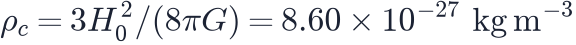
.- Divided by the proton mass: about 5.1 hydrogen atoms per cubic metre. The universe is emptier than any laboratory vacuum.
The Hubble radius ★
What is the Hubble radius c/H0 for H0 = 67.66 km/s/Mpc, in Gpc?
Gpc
Hint 1
c/H0 with c in km/s and H0 in km/s/Mpc gives megaparsecs.
Hint 2
299 792 / 67.66 Mpc, then divide by 1000.
Solution
. Galaxies beyond this distance recede faster than light today.
Luminosity distance at z = 1 ★★
In the Planck 2018 model, what is the luminosity distance to an object at z = 1, in Gpc? (Use the Cosmology Calculator.)
Gpc
Hint 1
Open the Cosmology Calculator (S1), keep the Planck 2018 preset and set z = 1.
Hint 2
The table gives the luminosity distance in Mpc; divide by 1000. It is (1 + z) times the comoving distance.
Solution
The calculator integrates
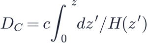
and multiplies by : — over 22 billion light-years for light that travelled less than 8 billion years.How big does a galaxy look? ★★★
A galaxy 30 kpc across lies at z = 1 in the Planck 2018 model. What angle does it cover on the sky, in arcseconds? The angular diameter distance there is given by the Cosmology Calculator.
arcsec
Hint 1
θ = size / D_A, in radians. D_A at z = 1 is about 1.70 Gpc.
Hint 2
Convert kpc and Gpc to the same unit, then multiply radians by 206 265 to get arcseconds.
Solution
- .
- .
- . Large galaxies at z = 1 are only a few arcseconds across.
Level 3 · What the universe is made of
Equations of state, dark matter from rotation, dark energy and the age of the universe.
Matter–radiation equality ★★
Matter density falls as a⁻³ and radiation as a⁻⁴. With Ωm = 0.3097 and Ωr = 9.14 × 10⁻⁵ today, at what redshift were their densities equal?
Hint 1
The ratio ρm/ρr grows in proportion to a.
Hint 2
Equality: 1 + z = Ωm / Ωr.
Solution
, which equals 1 at
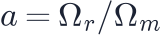
, so and .When dark energy took over ★★
With Ωm = 0.31 and ΩΛ = 0.69 today, at what redshift were the densities of matter and dark energy equal?
Hint 1
Dark energy density is constant, matter density goes as (1 + z)³.
Hint 2
Solve Ωm (1 + z)³ = ΩΛ.
Solution
, so and — about 3.6 billion years ago, very recently in cosmic terms.
Is the expansion accelerating? ★
Ignoring radiation, the deceleration parameter today is q0 = Ωm/2 − ΩΛ. What is q0 for Ωm = 0.31 and ΩΛ = 0.69?
Hint 1
Just substitute.
Hint 2
A negative q0 means the expansion is accelerating.
Solution
. Negative: the expansion is speeding up.
The age of a matter-only universe ★
An Einstein–de Sitter universe (Ωm = 1) has age t0 = (2/3)/H0. What would its age be for H0 = 67.66 km/s/Mpc, in Gyr?
Gyr
Hint 1
First compute the Hubble time 1/H0 = 977.8 / 67.66 Gyr.
Hint 2
Multiply by 2/3.
Solution
, so — younger than the oldest stars, one of the reasons this model was abandoned.
Dark matter from a flat rotation curve ★★
A spiral galaxy has a flat rotation curve at 220 km/s out to 50 kpc. What mass lies inside 50 kpc, in solar masses? (Enter scientific notation such as 5e11.)
M☉
Hint 1
M(<r) = v² r / G for a circular orbit.
Hint 2
Use SI units and divide the result by 1.989 × 10³⁰ kg.
Solution
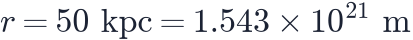
.- .
- — several times the mass in stars and gas.
How hard does a WIMP kick? ★★
A 100 GeV WIMP moving at 220 km/s hits a xenon nucleus (m_A = 122.3 GeV) head-on. What is the largest recoil energy it can give, in keV? Use with for the speed.
keV
Hint 1
The reduced mass is μ = m_χ m_A / (m_χ + m_A) = 100 × 122.3 / 222.3 = 55.0 GeV.
Hint 2
v/c = 220 / 299 792 = 7.34 × 10⁻⁴; the answer comes out in GeV, so multiply by 10⁶ for keV.
Solution
- GeV.
- GeV.
- That is 26.7 keV — which is why WIMP detectors are built to see recoils of a few to a few tens of keV.
Tuning in to an axion ★
An axion of mass 4 μeV converts into a photon in a magnetic field. At what frequency must a haloscope cavity be tuned, in MHz? Use with
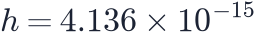
eV s.MHz
Hint 1
The photon carries the axion's whole rest energy, 4 × 10⁻⁶ eV.
Hint 2
Divide by Planck's constant in eV s, then by 10⁶ for MHz.
Solution
Hz = 967 MHz, in the range of mobile-phone frequencies — which is one of the practical problems of axion searches.
How much longer to run? ★★
A xenon detector with no background and 4.2 tonne-years of exposure excludes σ above 3 × 10⁻⁴⁸ cm². With no background, the limit scales as 1/exposure. How many tonne-years are needed to reach 1 × 10⁻⁴⁸ cm²?
tonne-years
Hint 1
The limit has to fall by a factor of three.
Hint 2
The exposure has to rise by the same factor.
Solution
tonne-years. With background the gain is slower — the limit then improves only as the square root of the exposure, which is why detectors are built to be as quiet as possible.
Level 4 · The hot early universe
Temperatures, relic particles and the first nuclei.
The temperature at last scattering ★
The CMB was released at z = 1089. What was the temperature of the universe then, in kelvin?
K
Hint 1
Temperature scales as T = T0 (1 + z).
Hint 2
T0 = 2.7255 K.
Solution
: cool enough for hydrogen atoms to survive.
Helium from neutrons ★
When nucleosynthesis starts there is about one neutron for every seven protons. If every neutron ends up in helium-4, what is the helium mass fraction Yₚ?
Hint 1
A helium-4 nucleus holds 2 neutrons and 2 protons.
Hint 2
Yₚ = 2(n/p) / (1 + n/p).
Solution
Out of 16 nucleons, 2 are neutrons and 14 protons. The 2 neutrons pair with 2 protons into one helium nucleus of mass 4: .
The neutrino background ★
Electron–positron annihilation heated the photons but not the neutrinos, so T_ν = (4/11)^(1/3) T_CMB. What is the temperature of the cosmic neutrino background today, in kelvin?
K
Hint 1
(4/11)^(1/3) ≈ 0.714.
Hint 2
Multiply by 2.7255 K.
Solution
.
Counting CMB photons ★★★
The number density of black-body photons is n = (2ζ(3)/π²)(kT/ħc)³ with ζ(3) = 1.202. How many CMB photons are there per cubic centimetre today?
per cm³
Hint 1
kT/ħc has units of 1/m. With T = 2.7255 K it is 1.19 × 10³ m⁻¹.
Hint 2
Cube it, multiply by 2ζ(3)/π² ≈ 0.2436, and convert from m⁻³ to cm⁻³ (divide by 10⁶).
Solution
- .
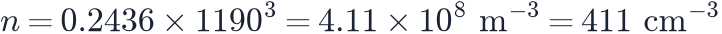
.
About a billion photons for every proton in the universe.
How much matter is in neutrinos? ★
Neutrinos with a total mass Σmν = 0.06 eV have Ων h² = Σmν / 93.14 eV. With h = 0.674, what is Ων?
Hint 1
First Ων h² = 0.06 / 93.14.
Hint 2
Then divide by h² = 0.4543.
Solution
, so — about half a percent of all matter.
13.6 eV as a temperature ★
Hydrogen is bound by 13.6 eV. What temperature, in kelvin, has k_B T = 13.6 eV? Use k_B = 8.617 × 10⁻⁵ eV/K.
K
Hint 1
T = E / k_B.
Hint 2
13.6 / 8.617 × 10⁻⁵.
Solution
K. Yet the universe only became neutral at about 3000 K, fifty times cooler — because there are more than a billion photons for every atom.
Colder than the CMB ★★
The gas stopped following the CMB at z = 150 and then cooled adiabatically, . What was its temperature at z = 20, in kelvin? Take .
K
Hint 1
At z = 150 the gas was at the CMB temperature, 2.7255 × 151 = 411.6 K.
Hint 2
Multiply by ((1 + 20) / (1 + 150))².
Solution
- At decoupling: K.
- At z = 20: K.
- The CMB is then at K, seven times warmer: gas that cold absorbs the 21-cm line.
Where to listen ★
The 21-cm line has a rest frequency of 1420.4 MHz. At what frequency, in MHz, do we receive it from gas at z = 17, where EDGES reported its trough?
MHz
Hint 1
Frequencies are divided by 1 + z.
Hint 2
1420.4 / 18.
Solution
MHz — in the FM radio band, which is why these experiments go to the most radio-quiet places on Earth.
Can this halo make stars? ★★
Using , what is the virial temperature of a 10⁹ M☉ halo forming at z = 9, in kelvin?
K
Hint 1
M / 10⁸ M☉ = 10, and 10^(2/3) = 4.64.
Hint 2
(1 + 9) / 10 = 1.
Solution
K — comfortably above the 10⁴ K at which atomic hydrogen starts to cool, so this halo can form a galaxy.
Level 5 · Sound waves, growth and lensing
The acoustic scale, the growth of structure and gravitational lensing.
The acoustic multipole ★★
The CMB sound horizon subtends θ = 0.010411 radians. What multipole ℓ_A = π/θ does that correspond to?
Hint 1
A feature of angular size θ corresponds roughly to ℓ ≈ π/θ.
Hint 2
Just divide.
Solution
. The first peak sits at , below , because of the phase shift of the oscillations and the potentials — but is what fixes the pattern.
The BAO ruler on the sky ★★
The BAO scale is 147.1 Mpc (comoving). In the Planck 2018 model, what angle does it cover at z = 0.5, in degrees? The transverse comoving distance there is given by the Cosmology Calculator.
°
Hint 1
θ = r_s / D_M(z), where both lengths are comoving.
Hint 2
D_M(0.5) ≈ 1947 Mpc. Convert radians to degrees.
Solution
- .
- — about nine full Moons.
Growing a fluctuation ★
In matter domination a density contrast grows in proportion to the scale factor, δ ∝ a. A fluctuation with δ = 10⁻³ at z = 1089 has what δ at z = 9?
Hint 1
δ ∝ a ∝ 1/(1 + z).
Hint 2
The ratio of scale factors is 1090 / 10.
Solution
. Still linear — but at this rate it reaches order unity and collapses before z ≈ 0.
An Einstein ring ★★★
A point-like mass of 10¹² M☉ lies at D_l = 1 Gpc in front of a source at D_s = 2 Gpc, with D_ls = 1 Gpc. What is the Einstein radius θ_E = √(4GM/c² · D_ls/(D_l D_s)), in arcseconds?
arcsec
Hint 1
4GM/c² for 10¹² M☉ is 5.91 × 10¹⁵ m.
Hint 2
D_ls/(D_l D_s) = 1/(2 Gpc), with 1 Gpc = 3.086 × 10²⁵ m. The square root gives radians.
Solution
- .
- .
- : a typical galaxy-scale ring.
How long does a halo take to collapse? ★★
A dark matter halo has a mean density of 200 times the critical density today (ρc = 8.60 × 10⁻²⁷ kg/m³). What is its free-fall time t_ff = √(3π / (32 G ρ)), in Gyr?
Gyr
Hint 1
ρ = 200 ρc = 1.72 × 10⁻²⁴ kg/m³.
Hint 2
The result is in seconds; 1 Gyr = 3.156 × 10¹⁶ s.
Solution
— halos have had time to assemble many times over.
How much the peaks are damped ★
Reionisation gives an optical depth . By what factor are the CMB acoustic peaks suppressed?
Hint 1
The suppression of the power spectrum is e^(−2τ).
Hint 2
e^(−0.112).
Solution
: about 11% of the power is scattered away. Because only the
product  is measured from temperature alone, τ has to come from the low-ℓ
polarisation before
is measured from temperature alone, τ has to come from the low-ℓ
polarisation before  — and hence — can be pinned down.
— and hence — can be pinned down.
The energy scale of inflation ★★
If B modes were detected with , at what energy scale did inflation happen, in GeV? Use .
GeV
Hint 1
The formula is written so that r = 0.01 is the reference point.
Hint 2
(0.01/0.01)^(1/4) = 1.
Solution
GeV — a trillion times the energy of the LHC, and the reason a B-mode detection would matter far beyond cosmology.
The size of a disc ★
A halo with virial radius 230 kpc has spin λ = 0.035. If the gas keeps its angular momentum, how big is the disc it forms? Use and give the answer in kpc.
kpc
Hint 1
√2 = 1.414.
Hint 2
0.035 × 230 / 1.414.
Solution
kpc — about the scale of the Milky Way's disc. A tiny spin, amplified by the gas falling fifty times closer to the centre.
How rare is a cluster? ★★
For a 10¹⁵ M☉/h cluster the linear fluctuation today is σ = 0.6, and at z = 1 the growth factor is 0.61. What is the peak height ν = δc / σ(z) at z = 1, with δc = 1.686?
Hint 1
At z = 1 the fluctuation has only grown to 0.6 × 0.61.
Hint 2
ν = 1.686 / 0.366.
Solution
, so . A 4.6σ peak: the abundance goes as , which is why such clusters are rare at z = 1 and why their number measures σ8.
How efficient is the Milky Way? ★★
The Milky Way's halo has turned 3.5% of its mass into stars. The cosmic baryon fraction is Ωb/Ωm = 0.0490/0.3097. What percentage of the halo's baryons are in stars?
%
Hint 1
Ωb/Ωm = 0.158.
Hint 2
0.035 / 0.158.
Solution
, so about 22%. Even the most efficient galaxies have left four fifths of their baryons as gas — much of it blown out or kept hot by feedback.
Level 6 · Advanced topics
Black holes, inflation, standard sirens and the tensions of today.
The Sun as a black hole ★
What would the Schwarzschild radius r_s = 2GM/c² of the Sun be, in km?
km
Hint 1
Substitute M☉ = 1.989 × 10³⁰ kg.
Hint 2
The result is in metres; divide by 1000.
Solution
.
How much inflation? ★
Inflation must stretch the universe by a factor of about 10²⁶. How many e-folds N is that, where the stretch factor is e^N?
e-folds
Hint 1
N = ln(10²⁶).
Hint 2
ln(10) = 2.3026.
Solution
— the "about 60 e-folds" quoted everywhere.
Gravitational waves from φ² inflation ★
For the simplest inflaton potential V ∝ φ² the tensor-to-scalar ratio is r = 8/N. What is r for N = 60?
Hint 1
Just divide.
Hint 2
Compare with the BICEP/Keck limit r < 0.036.
Solution
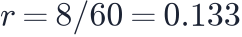
, nearly four times the BICEP/Keck limit: the φ² model is ruled out.A standard siren ★
The gravitational waves of a neutron-star merger give a distance of 43.8 Mpc; its host galaxy recedes at 3017 km/s (corrected for its own motion). What value of H0 follows, in km/s/Mpc?
km/s/Mpc
Hint 1
At this distance Hubble's law is enough: H0 = v / d.
Hint 2
Divide the velocity by the distance.
Solution
, from a single event and without any distance ladder.
How big is the Hubble tension? ★★
SH0ES measures H0 = 73.04 ± 1.04 and Planck infers 67.4 ± 0.5 km/s/Mpc. Assuming independent Gaussian errors, by how many σ do they differ?
σ
Hint 1
The difference is 5.64 km/s/Mpc.
Hint 2
Its error is √(1.04² + 0.5²).
Solution
, so the difference is .
The horizon of a giant ★
What is the Schwarzschild radius of the 6.5 × 10⁹ M☉ black hole M87, in astronomical units*? Use
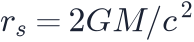
and 1 AU = 1.496 × 10¹¹ m.AU
Hint 1
r_s = 2GM/c² with G = 6.674 × 10⁻¹¹, M☉ = 1.989 × 10³⁰ kg, c = 2.998 × 10⁸ m/s.
Hint 2
The Sun''s Schwarzschild radius is 2.95 km; scale it by 6.5 × 10⁹.
Solution
- .
- .
- Dividing by 1.496×10¹¹ m/AU gives about 128 AU — three times Neptune's orbit.
Colder than the sky ★
What is the Hawking temperature of a 10 M☉ black hole, in kelvin? Use .
K
Hint 1
The temperature is inversely proportional to the mass.
Hint 2
Divide the solar-mass value by 10.
Solution
K — a hundred million times colder than the 2.7 K microwave background, which is why this black hole absorbs far more than it emits and is still growing.
A black hole as a clock ★★
A primordial black hole forms when the horizon mass is its own. If the horizon mass is , at what time after the Big Bang did a one-solar-mass primordial black hole form, in seconds?
s
Hint 1
Set the horizon mass equal to 1 M☉ and solve for t.
Hint 2
t = 1 / 10⁵ s.
Solution
s — around the time quarks were condensing into protons and neutrons. The mass of a primordial black hole reads off when it formed.
When is the Big Rip? ★★
With phantom energy w = −1.5, H₀ = 70 km/s/Mpc and Ωm = 0.3, how long until the Big Rip, in billion years? Use and 1/H₀ = 13.97 Gyr.
billion years
Hint 1
|1 + w| = 0.5, so 2/(3 × 0.5) = 4/3.
Hint 2
√(1 − 0.3) = 0.837.
Solution
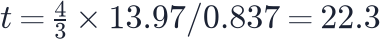
Gyr. Bring w closer to −1 and the rip recedes: for w = −1.05 it is more than 200 billion years away.The last months of the Solar System ★★
A system with orbital period P is torn apart a time before the Big Rip. For the Earth's orbit (P = 365.25 days) and w = −1.5, how many days before the end is that?
days
Hint 1
1 + 3w = −3.5, so √(2 × 3.5) = 2.646.
Hint 2
6π × 0.5 = 9.42.
Solution
days — about three months. The Earth itself lasts until half an hour before the end, and atoms until the last s.
A very long wait ★
A black hole evaporates in . How long does a 10 M☉ black hole take, in years?
years
Hint 1
The lifetime grows as the cube of the mass.
Hint 2
10³ = 1000.
Solution
years — and none of it can begin until the CMB has cooled below the black hole's own Hawking temperature.
Exponential expansion ★★
Far in the future a cosmological constant makes the expansion exponential, with
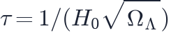
. With 1/H₀ = 14.45 Gyr and ΩΛ = 0.69, what is τ in billion years?billion years
Hint 1
√0.69 = 0.831.
Hint 2
14.45 / 0.831.
Solution
Gyr. Every 17 billion years every distance between unbound galaxies grows by a factor e, for ever.
Level 7 · Working like a cosmologist
Goodness of fit, significance, chains and error budgets.
Is the fit good? ★
A model with 3 free parameters fitted to 1590 supernovae gives χ² = 1540. What is χ² per degree of freedom?
Hint 1
Degrees of freedom = data points − fitted parameters.
Hint 2
1590 − 3 = 1587.
Solution
: a perfectly acceptable fit.
The threshold for 3σ ★
For a single parameter, how large must Δχ² above the minimum be to exclude a value at 3σ?
Hint 1
For one parameter Δχ² = n² for nσ.
Hint 2
Square the number of sigmas.
Solution
. (For a two-parameter contour the threshold would be 11.8.)
Independent samples ★
A chain has 20 000 steps. The first 20% are discarded as burn-in, and the autocorrelation length of the rest is 80 steps. How many independent samples does it contain?
samples
Hint 1
Remove the burn-in first: 16 000 steps remain.
Hint 2
N_eff = N / τ.
Solution
— far fewer than the 20 000 points plotted.
An error budget ★
The three rungs of a distance ladder contribute independent errors of 1.3%, 1.0% and 0.5% to H0. What is the total uncertainty, in percent?
%
Hint 1
Independent errors add in quadrature.
Hint 2
√(1.3² + 1.0² + 0.5²).
Solution
. Removing the 0.5% term entirely would only bring it to 1.64%.
An error that depends on a correlation ★★★
A chain gives σ(Ωm) = 0.068, σ(ΩΛ) = 0.095 and a correlation ρ = 0.88. What is the uncertainty on q0 = Ωm/2 − ΩΛ? Use σ² = σm²/4 + σΛ² − ρ σm σΛ.
Hint 1
Compute the three terms: 0.001156, 0.009025 and 0.005685.
Hint 2
Add the first two, subtract the third, take the square root.
Solution
, so . Ignoring the correlation would have given 0.101.
How much volume is a survey worth? ★
A survey maps 10 (Gpc/h)³ with a galaxy density such that n̄P = 1 at the BAO scale. What is its effective volume, in (Gpc/h)³?
(Gpc/h)³
Hint 1
V_eff = V [n̄P / (1 + n̄P)]².
Hint 2
With n̄P = 1 the bracket is 1/2.
Solution
: shot noise costs three quarters of the volume.
When the floor takes over ★
A BAO measurement has a statistical error of 0.4% and a systematic floor of 0.3%. What is the total error, in percent?
%
Hint 1
Independent errors add in quadrature.
Hint 2
√(0.4² + 0.3²).
Solution
. Even a perfect survey would stay at 0.3%.
How many mocks? ★★
A covariance matrix is estimated from N mock catalogues for a measurement in 20 bins. The fractional error on each estimated variance is about
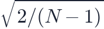
. How many mocks are needed for that error to be 2 percent?mocks
Hint 1
Set √(2/(N−1)) = 0.02 and solve for N.
Hint 2
2/(N−1) = 0.0004, so N − 1 = 5000.
Solution
, so . This is why surveys build thousands of fast approximate mocks rather than a handful of N-body runs.
How far a velocity moves a galaxy ★
A galaxy at low redshift falls towards a cluster at 600 km/s along our line of sight. With km/s/Mpc, by how much does its redshift displace it in the map, in Mpc/h?
Mpc/h
Hint 1
In comoving Mpc/h the shift is v / (100 km/s per Mpc/h).
Hint 2
600 / 100 = 6.
Solution
— comparable to the size of a cluster, which is exactly why fingers of God are so obvious.
The combination a paper quotes ★
Planck 2018 gives σ₈ = 0.811 and Ωm = 0.315. Weak-lensing papers quote the combination along their degeneracy,
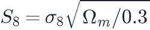
. What is S₈ for Planck?
Hint 1
Ωm / 0.3 = 1.05.
Hint 2
√1.05 = 1.0247.
Solution
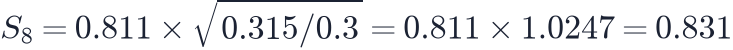
. Lensing surveys find about 0.77–0.78 — the S8 tension, quoted in the one combination their tilted contours constrain well.